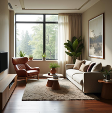
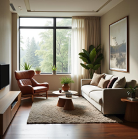
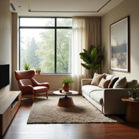
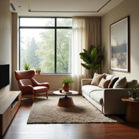
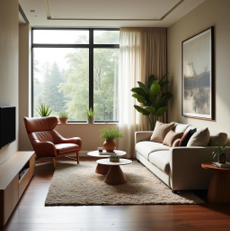
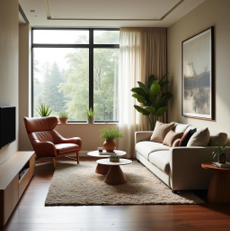

ZEUS: Zero‑shot Efficient Unified Sparsity
for Generative
Models
Training‑free acceleration • One‑line integration
ZEUS : Lightning-Fast, Training-Free — What does it minimally take to accelerate generative models—without training? ZEUS shows that a tiny, second-order finite-difference extrapolator plus a parity-aware reuse schedule is enough. Skip denoiser calls, keep fidelity, and outrun training-free baselines. {Any modality. Any model. Any scheduler.}
Figure 1. ZEUS exhibits near-linear efficiency-fidelity scaling controlled by sparsity pattern. Under the same acceleration ratio, ZEUS achieves signifiacnt better faithfulness compared to previous strategies, measured in LPIPS (e.g., 2.2×/0.05 lpips vs. TeaCache (2.0×/0.22 lpips); 3.6×/0.22 lpips vs. TaylorSeer (3.2×/0.42 lpips)).
Meet ZEUS —Zero-shot Efficient Unified Sparsity for Generative Models—our latest library that accelerate generative models with a groundbreaking end-to-end performance. ZEUS offers a controllable efficiency–fidelity trade-off via tuning an inference-time sparsity ratio. Under a simple, principled design, ZEUS combines (i) zero-compute bypassing of the denoiser, (ii) second-order interpolation of the model output $\psi$ (theoretically equivalent across common prediction objectives), and (iii) a zigzag-style retrieval schedule—the “ ZEUS pattern.” Across architectures, solvers, and modalities, ZEUS consistently surpasses prior state of the art, making it a practical path toward faster, faithful generation.
In probability-flow ODE sampling, we asked a simple question: what happens to the denoiser’s prediction $\psi$ from one reverse-time step to the next? The answer drew a lightning bolt.
As sampling marches, the network’s outputs $\psi_t$ (i.e., $\epsilon$, $v$, $x_0$, or flow) do not gently align. Empirically and theoretically, we find a anti-correlation between neighbors:
$\langle \psi_t,\ \psi_{t-h} \rangle < 0$
while predictions two steps apart tend to realign:
$\langle \psi_t,\ \psi_{t-2h} \rangle > 0$
This alternating geometry forms a crisp zig-zag—the ZEUS pattern.
ZEUS turns this pattern into acceleration, as shown in Figure 2. ZEUS uses a minimal second-order finite-difference predictor to achieve principled approximation and a reuse schedule to prevent overshooting:
$\hat{\psi}_{t-1}\ \leftarrow\ 2\,\psi_t - \psi_{t+1}\quad\text{(extrapolate first)},\qquad \hat{\psi}_{t-2}\ \leftarrow\ \psi_t\quad\text{(reuse then)}.$

Figure 2. Illustration of the reuse schedule. The purple curve shows the true stochastic trajectory $\psi^*$; the green segments show the model‐computed $\psi_t$ values; and the blue segments depict the second‐order extrapolation used to estimate $\psi_{t-1}$ when skipping a step. Left: Naive Interpolation overshoots because $\psi_t$ fluctuates between timesteps. Right: Cache reuse prevents overshoot by reusing $\psi_t$.
Motivated by this observation, ZEUS extrapolates $\psi_t$ with a bounded second-order finite-difference predictor and applies a parity-aware reuse schedule that exploits adjacent anti-alignment, as shown in Figure 3.
Figure 3. Overview paradigm of ZEUS .
We evaluate the end-to-end performance of ZEUS on a single A100 GPU. Controlled by a sparsity ratio, ZEUS demonstrates a efficiency-fidelity tradeoff.
ZEUS — As the sparsity increases from Original → Turbo, we yield near-linear speedups: 1.00× (Original), 1.92× (Balanced), 2.25× (Medium), 2.91× (Fast), and 3.64× (Turbo).


 


Original (1.0x)


 


Balanced (1.92x)

 

Medium (2.25x)


Fast (2.91x)


Turbo (3.64x)
@misc{zeus2025,
title = {ZEUS: Zero-shot Efficient Unified Sparsity for Generative Models},
author = {Yixiao Wang and Ting Jiang and Zishan Shao and Hancheng Ye and Jingwei Sun and Mingyuan Ma and Jianyi Zhang and Yiran Chen and Hai Li},
year = {2025},
howpublished = {https://yixiao-wang-stats.github.io/zeus/},
note = {Code and project page available at {https://github.com/Ting-Justin-Jiang/ZEUS}}
}